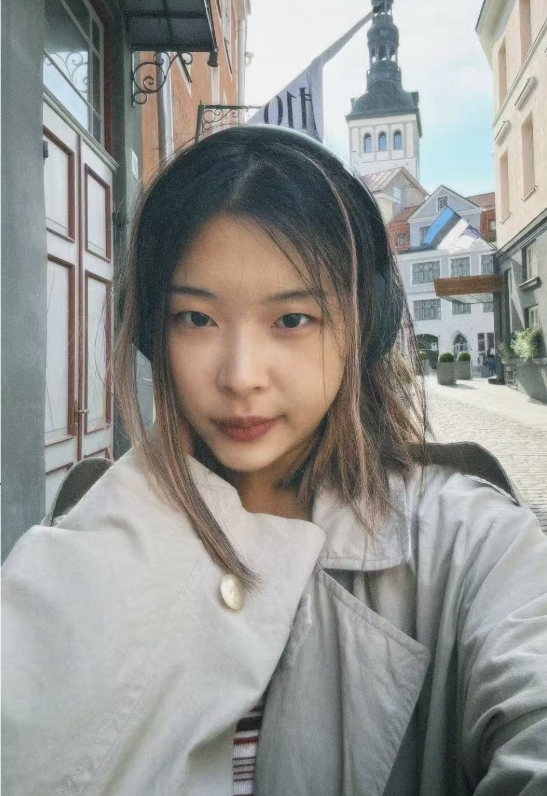

严书航 · 作品集
作曲 / 编曲 / 混音 / 作词 / 制作，专注影视配乐与流行音乐 · Base 苏州 / 上海
ALBUM 🍷 《Dinner Party》
《Dinner Party》是一场关于成长、孤独与温柔的声音晚宴。作品以“晚宴”为隐喻， 通过十首围绕食物、故事与情感的歌曲，构建出一段从邀请、相遇到告别的晚餐旅程。 每首作品对应一道菜、一种情绪，也是一场内心的对话，也是一次关于记忆、欲望与自我认知的叙事。

单曲《Lie to Me》（2024 · 3m30s）
融合中西元素，灵感来自张爱玲《倾城之恋》，呈现文化碰撞下的爱情幻想。
音乐创作项目：院校影视及实验影像配乐项目
北京电影学院影视配乐项目
为北京电影学院学生电影短片创作原创配乐，根据影片叙事节奏、情绪推进与角色状态进行音乐设计。
成片链接：
https://vimeo.com/972859273
密码： GHPRIVATE
密码： GHPRIVATE
香港浸会大学影视配乐项目
为香港浸会大学 MFA 电影短片创作原创配乐，结合影片风格与叙事需求完成音乐方案设计。
成片链接：
https://www.xinpianchang.com/a13521451?from=private_pwd
密码： 31ex
密码： 31ex
伦敦艺术大学数字艺术与实验影像配乐项目
为伦敦艺术大学 MA Digital Art & Experimental Film 作品创作原创配乐，围绕实验影像的视觉语言与氛围需求进行声音表达。
AKB48 成员 Solo 单曲项目
参与 AKB48 成员 solo 单曲的定制化创作，负责歌曲作曲、编曲及整体音乐风格把控。
关于我

严书航（Shuhang Yan），音乐制作与声音艺术，现居苏州 / 上海。以 Distinction 成绩毕业于伦敦大学金史密斯学院（Goldsmiths, University of London）流行音乐硕士。创作融合东方音乐元素与另类流行制作，注重情绪氛围与叙事表达，在实验性与流行性的交汇处探索声音的更多可能。
- 专长：影视/游戏配乐 · 流行音乐制作 · Studio Engineering
- 擅长 DAW：Logic Pro · Pro Tools
- 教育：Goldsmiths, MMus Popular Music — honoured with Distinction